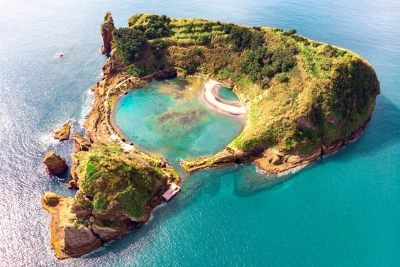
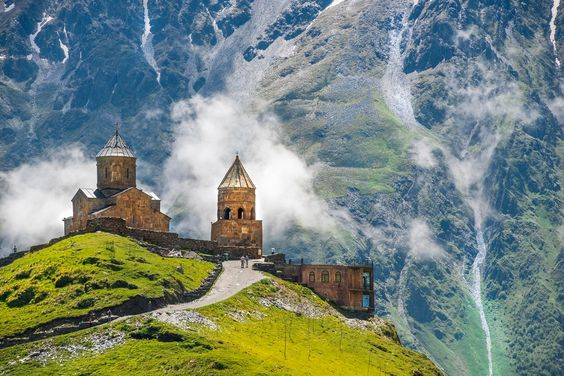
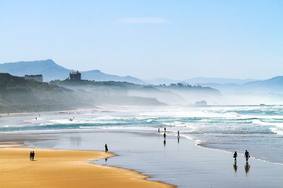
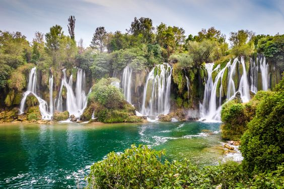
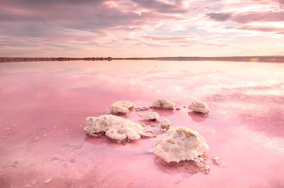
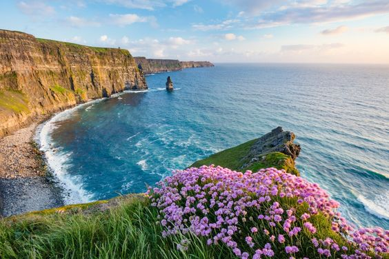

|

Azory, Portugalia
Ten portugalski archipelag, położony około 1500 km od wybrzeży Lizbony, może zainspirować do podróży jednym zdjęciem. Zielone doliny, strome klify nad oceanem, rzędy niebieskich hortensji i rozproszone wodospady sprawiają, że Azory to raj, który warto poznać — po prostu upewnij się, że go odwiedzisz, zanim wszyscy, których znasz, ubiegną Cię.
|

Góry Kaukazu, Gruzja
Po dziesięcioleciach spędzonych poza zasięgiem wzroku i pamięci wielu podróżnych, częściowo ze względu na ograniczoną infrastrukturę i sporadyczny konflikt z sąsiednią Rosją, ta była republika radziecka przyciąga turystów zmęczonych zatłoczonymi górskimi szlakami w Alpach lub winnicami dostępnymi wyłącznie w rezerwatach we Francji. Najlepszym sposobem, aby przekonać się o różnorodności terenu Gruzji, są szlaki turystyczne wijące się przez pasmo górskie Wielkiego Kaukazu oddzielające Europę od Azji.
|
|

Biarritz, Francja
Pływanie w turkusowych wodach, popijanie różu o zachodzie słońca, wdychanie zapachów lawendy: Południe Francji jest ucieleśnieniem francuskiego przepychu i wyrafinowania. W okolicy znajdują się idylliczne miejsca, takie jak Biarritz – kurort, którego dzikie plaże cieszą się ogromną popularnością wśród surferów, członków rodziny królewskiej i celebrytów (możesz je także rozpoznać z „Słońce też wschodzi” Hemingwaya).
|

Wodospady Kravica, Bośnia i Hercegowina
Bez wątpienia słyszałeś o chorwackim Parku Narodowym Krka, którego wodospady są tak popularne, że kraj ogranicza liczbę odwiedzających. Na szczęście w sąsiedniej Bośni i Hercegowinie znajduje się również mnóstwo wspaniałych wodospadów: rozległe wodospady i szmaragdowe baseny wodospadów Kravica, otoczone zielonymi lasami, to widok godny pielgrzymek. I w przeciwieństwie do Chorwacji, często będziesz mieć je wszystkie dla siebie.
|
|

Las Salinas de Torrevieja, Hiszpania
Plaże z różowym piaskiem to wystarczający powód, aby wskoczyć do samolotu na Karaiby – ale w Hiszpanii można pływać w różowej wodzie. To różowe jezioro położone w Walencji jest częścią wspaniałego Parku Narodowego Las Salinas de Torrevieja. W okresie lęgowym jest domem dla tysięcy flamingów, ale większość mieszkańców woli myśleć o nim jak o swoim naturalnym spa – dzięki wysokiej zawartości soli szybka kąpiel ma działanie detoksykujące i złuszczające. Zaplanuj wizytę w jasny, słoneczny dzień, kiedy woda jest najbardziej różowa, co czyni je bez wątpienia jednym z najpiękniejszych miejsc w Europie.
|

Klify Moher, Irlandia
Niewiele miejsc jest przykładem surowego, nieokiełznanego piękna zachodniego wybrzeża Irlandii, jak Klify Moher, cud natury, który w najwyższym punkcie osiąga wysokość 220 metrów. I choć można je rozpoznać jako Klify Szaleństwa z „Narzeczonej księżniczki”, ten cud nie jest fikcją – klify znajdują się zaledwie 90 minut jazdy na południe od Galway. Aby się tam dostać, można wypożyczyć samochód lub złapać autobus z Doolin, który zabierze Cię bezpośrednio pod klify.
|